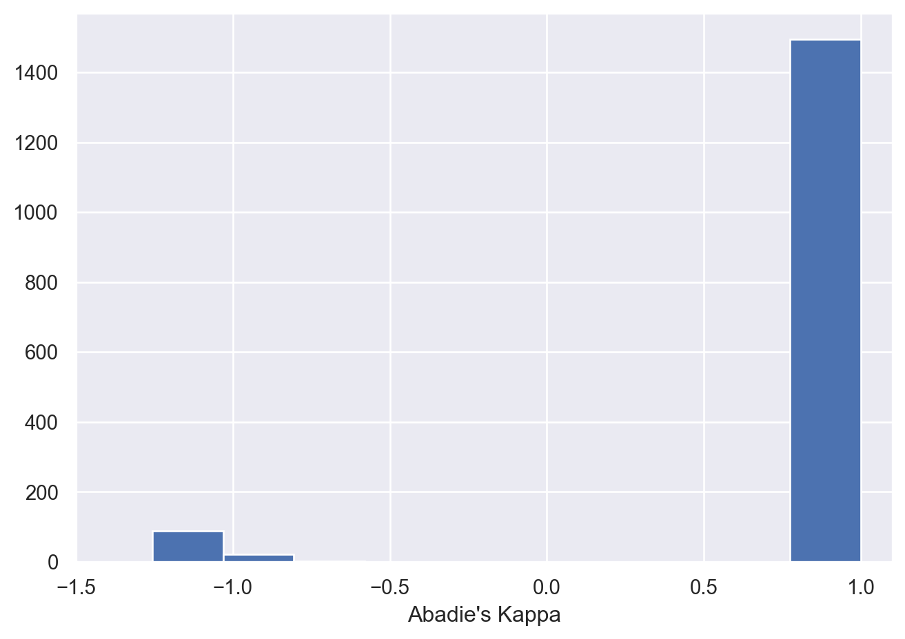
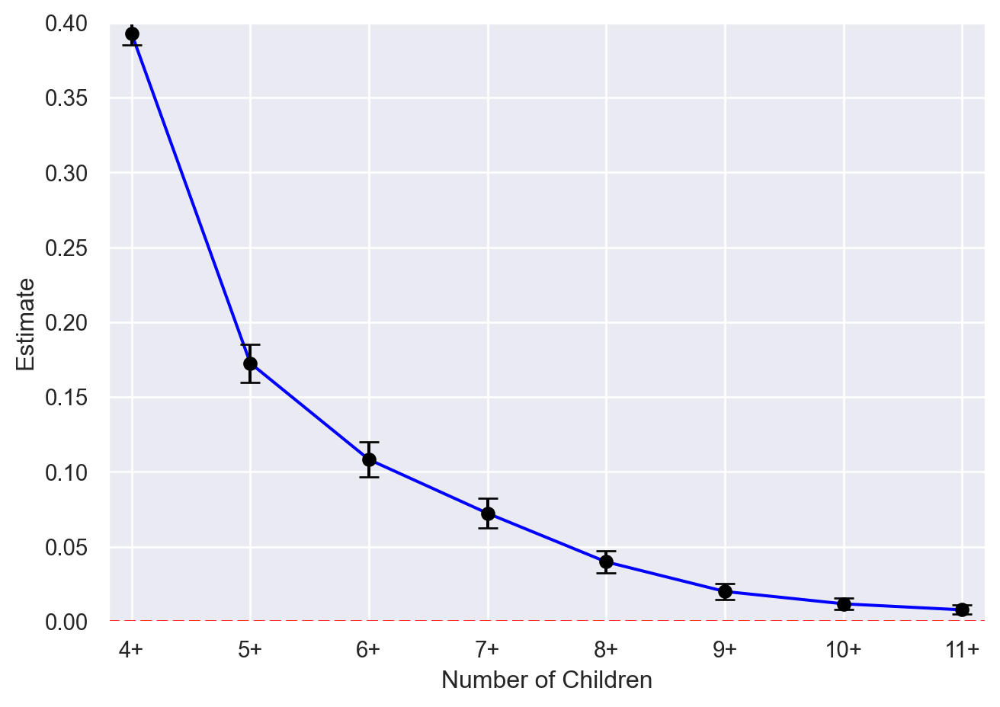
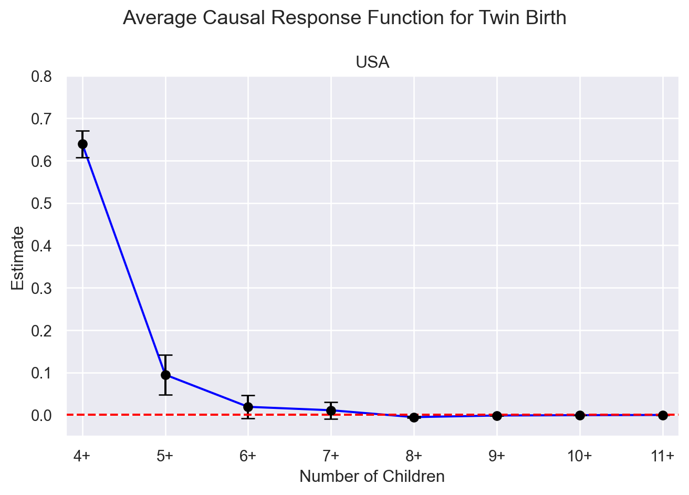

import pandas as pd
data = pd.read_csv("data/Finkelstein_et_al_2012.csv")
# Rename variables
data = data.rename(columns={'er_any_12m': 'Y', 'ohp_all_ever_survey': 'D',
'treatment': 'Z'})
data = data.dropna()Chapter 5
Code Call-out 5.1: Treatment Assignment with Imperfect Compliance
In this code call-out we use data of Finkelstein et al. (2012), which analyses the impact of public insurance coverage on a range of health outcomes and measures of well-being. Finkelstein et al. (2012) analyze the Oregon Health Insurance Experiment, which randomly selected by lottery a group of households who could then submit the paperwork to be able to enroll in Medicaid, a public health insurance program which covers individuals’ medical expenses. Medicaid is offered to low income households, and in general individuals covered by Medicaid are different in a range of ways to individuals not covered by Medicaid. But because the Oregon Health Insurance Experiment randomly assigned individuals to a treatment group, which was invited to apply for Medicaid, and a control group, which was not invited to apply for Medicaid, this random assignment can be used as an instrument for Medicaid coverage.
In this code call out we use data from Finkelstein et al. (2012) to estimate the local average treatment effect of Medicaid on health outcomes. In particular, we focus on understanding the range of ways which we can mechanically arrive to this estimand, showing the equivalance between, 2SLS, the Wald estimator, and indirect least squares as laid out in Section 5.2.4 of the book. This should also make clear to us the relationship between the intention to treat effect, the 2SLS first stage and the LATE.
In the file Finkelstein_et_al_2012.csv you can find a minimalist sample of the data used by Finkelstein et al. (2012) in order to replicate some of the paper’s tables 3 and 5 results. This minimalist sample consists of respondents to a survey that was sent out by mail in seven waves between July and August 2009.
In this example we will focus on a binary outcome er_any_12m which takes a value of 1 if individual has any ER visits in last six months and 0 otherwise. The endogenous treatment indicator variable \(D\) is a binary variable ohp_all_ever_survey which takes 1 if the individual was ever on Medicaid during the study period and our instrument \(Z\) is a binary variable treatment which takes 1 if the individual’s household was selected by the lottery. Below, we load these data, rename the outcome, endogenous variable and instrument as Y, D and Z respectively, and make one minor edit to convert our outcome variable to a numeric format. Note that here we are dropping a small number of individuals for whom we do not have information on the outcome of interest:
We will begin by estimating Intention to Treat Effect (ITT) of lottery receipt, to see that we can replicate the parameters reported by Finkelstein et al. (2012). To estimate the ITT, we simply estimate: \[Y_i = \beta_0 + \beta_1 Z_i + X^\prime_i\Gamma + \varepsilon_i\] Where \(X_i\) is a vector of covariates which includes indicator variables for the number of individuals in the household listed on the lottery sign-up form, indicator variables for survey wave and the interaction between these two sets of indicator variables. As laid out in Finkelstein et al. (2012), we will cluster standard errors at the household level
import statsmodels.api as sm
itt_model = sm.WLS.from_formula(data = data,
formula = "Y ~ Z + ddddraw_sur_2 + ddddraw_sur_3 + ddddraw_sur_4" +
"+ ddddraw_sur_5 + ddddraw_sur_6 + ddddraw_sur_7 + dddnumhh_li_2" +
"+ dddnumhh_li_3 + ddddraXnum_2_2 + ddddraXnum_2_3 + ddddraXnum_3_2" +
"+ ddddraXnum_3_3 + ddddraXnum_4_2 + ddddraXnum_5_2 + ddddraXnum_6_2" +
" + ddddraXnum_7_2",
weights = data['weight_12m']).fit()
itt_model.get_robustcov_results(cov_type = 'cluster',
groups = data['household_id']).summary()| Dep. Variable: | Y | R-squared: | 0.006 |
| Model: | WLS | Adj. R-squared: | 0.006 |
| Method: | Least Squares | F-statistic: | 368.9 |
| Date: | Mon, 15 Jun 2026 | Prob (F-statistic): | 0.00 |
| Time: | 02:35:25 | Log-Likelihood: | -14835. |
| No. Observations: | 23514 | AIC: | 2.971e+04 |
| Df Residuals: | 23496 | BIC: | 2.985e+04 |
| Df Model: | 17 | ||
| Covariance Type: | cluster |
| coef | std err | t | P>|t| | [0.025 | 0.975] | |
| Intercept | 0.2720 | 0.013 | 21.387 | 0.000 | 0.247 | 0.297 |
| Z | 0.0065 | 0.007 | 0.964 | 0.335 | -0.007 | 0.020 |
| ddddraw_sur_2 | 0.0001 | 0.017 | 0.008 | 0.994 | -0.033 | 0.034 |
| ddddraw_sur_3 | 0.0019 | 0.017 | 0.110 | 0.913 | -0.032 | 0.036 |
| ddddraw_sur_4 | -0.0009 | 0.016 | -0.057 | 0.955 | -0.033 | 0.031 |
| ddddraw_sur_5 | 0.0254 | 0.017 | 1.532 | 0.126 | -0.007 | 0.058 |
| ddddraw_sur_6 | 0.0092 | 0.015 | 0.607 | 0.544 | -0.020 | 0.039 |
| ddddraw_sur_7 | 0.0100 | 0.015 | 0.686 | 0.493 | -0.019 | 0.039 |
| dddnumhh_li_2 | -0.0543 | 0.020 | -2.734 | 0.006 | -0.093 | -0.015 |
| dddnumhh_li_3 | -0.0245 | 0.124 | -0.198 | 0.843 | -0.267 | 0.218 |
| ddddraXnum_2_2 | -0.0049 | 0.028 | -0.173 | 0.862 | -0.061 | 0.051 |
| ddddraXnum_2_3 | -0.0317 | 0.165 | -0.192 | 0.848 | -0.355 | 0.292 |
| ddddraXnum_3_2 | -0.0121 | 0.028 | -0.434 | 0.664 | -0.067 | 0.043 |
| ddddraXnum_3_3 | -0.2554 | 0.124 | -2.056 | 0.040 | -0.499 | -0.012 |
| ddddraXnum_4_2 | -0.0299 | 0.026 | -1.136 | 0.256 | -0.081 | 0.022 |
| ddddraXnum_5_2 | -0.0343 | 0.027 | -1.264 | 0.206 | -0.087 | 0.019 |
| ddddraXnum_6_2 | -0.0224 | 0.025 | -0.902 | 0.367 | -0.071 | 0.026 |
| ddddraXnum_7_2 | -0.0089 | 0.047 | -0.191 | 0.849 | -0.101 | 0.083 |
| Omnibus: | 3693.481 | Durbin-Watson: | 2.003 |
| Prob(Omnibus): | 0.000 | Jarque-Bera (JB): | 5755.809 |
| Skew: | 1.210 | Prob(JB): | 0.00 |
| Kurtosis: | 2.853 | Cond. No. | 98.7 |
Notes:
[1] Standard Errors are robust to cluster correlation (cluster)
As we see above, this ITT results in an estimate of 0.0065 with a corresponding standard error of 0.0067. This replicates the result of Finkelstein et al. (2012) column 2 of table 5, suggesting that individuals who were randomly assigned to the option to apply to Medicaid – whether or not they ultimately gain access to Medicaid – had slightly higher rates of ER usage, however we cannot rule out that this effect is 0 with at standard levels of confidence.
Manually Estimating 2SLS: Right Estimates, Wrong Standard Errors
If we wish to estimate the LATE itself, there are a number of ways which we can proceed. In practice, we will essentially always want to make use of statistical routines for IV or 2SLS estimation, which will guarantee the correct implementation of standard errors. However, it is perhaps illustrative to see that we can “manually” estimate 2SLS, and—the point estimates at least—will agree entirely with those from 2SLS estimation routines. If we wish to estimate 2SLS, we can (logically) proceed in two stages. Below we begin by estimating the first stage, regressing endogenous treatment receipt on the randomly assigned lottery:
first = sm.WLS.from_formula(data = data,
formula = "D ~ Z + ddddraw_sur_2 + ddddraw_sur_3 " +
"+ ddddraw_sur_4 + ddddraw_sur_5 + ddddraw_sur_6 " +
"+ ddddraw_sur_7 + dddnumhh_li_2 + dddnumhh_li_3 + " +
"ddddraXnum_2_2 + ddddraXnum_2_3 + ddddraXnum_3_2" +
"+ ddddraXnum_3_3 + ddddraXnum_4_2 + ddddraXnum_5_2" +
" + ddddraXnum_6_2 + ddddraXnum_7_2",
weights = data['weight_12m']).fit()
first.get_robustcov_results(cov_type = 'cluster',
groups = data['household_id']).summary()| Dep. Variable: | D | R-squared: | 0.109 |
| Model: | WLS | Adj. R-squared: | 0.109 |
| Method: | Least Squares | F-statistic: | 125.6 |
| Date: | Mon, 15 Jun 2026 | Prob (F-statistic): | 0.00 |
| Time: | 02:35:25 | Log-Likelihood: | -14088. |
| No. Observations: | 23514 | AIC: | 2.821e+04 |
| Df Residuals: | 23496 | BIC: | 2.836e+04 |
| Df Model: | 17 | ||
| Covariance Type: | cluster |
| coef | std err | t | P>|t| | [0.025 | 0.975] | |
| Intercept | 0.2089 | 0.013 | 16.586 | 0.000 | 0.184 | 0.234 |
| Z | 0.2899 | 0.007 | 43.413 | 0.000 | 0.277 | 0.303 |
| ddddraw_sur_2 | -0.0459 | 0.017 | -2.694 | 0.007 | -0.079 | -0.012 |
| ddddraw_sur_3 | -0.0497 | 0.017 | -2.841 | 0.005 | -0.084 | -0.015 |
| ddddraw_sur_4 | -0.0636 | 0.016 | -4.006 | 0.000 | -0.095 | -0.033 |
| ddddraw_sur_5 | -0.0683 | 0.016 | -4.313 | 0.000 | -0.099 | -0.037 |
| ddddraw_sur_6 | -0.0636 | 0.015 | -4.294 | 0.000 | -0.093 | -0.035 |
| ddddraw_sur_7 | -0.0776 | 0.014 | -5.441 | 0.000 | -0.106 | -0.050 |
| dddnumhh_li_2 | -0.1113 | 0.021 | -5.197 | 0.000 | -0.153 | -0.069 |
| dddnumhh_li_3 | -0.0126 | 0.117 | -0.108 | 0.914 | -0.242 | 0.217 |
| ddddraXnum_2_2 | 0.0356 | 0.030 | 1.172 | 0.241 | -0.024 | 0.095 |
| ddddraXnum_2_3 | -0.1630 | 0.156 | -1.046 | 0.295 | -0.468 | 0.142 |
| ddddraXnum_3_2 | 0.0586 | 0.032 | 1.859 | 0.063 | -0.003 | 0.120 |
| ddddraXnum_3_3 | -0.0860 | 0.218 | -0.395 | 0.693 | -0.512 | 0.340 |
| ddddraXnum_4_2 | 0.0741 | 0.029 | 2.555 | 0.011 | 0.017 | 0.131 |
| ddddraXnum_5_2 | 0.0599 | 0.029 | 2.102 | 0.036 | 0.004 | 0.116 |
| ddddraXnum_6_2 | 0.0639 | 0.026 | 2.437 | 0.015 | 0.013 | 0.115 |
| ddddraXnum_7_2 | 0.0772 | 0.046 | 1.676 | 0.094 | -0.013 | 0.168 |
| Omnibus: | 2263.652 | Durbin-Watson: | 1.982 |
| Prob(Omnibus): | 0.000 | Jarque-Bera (JB): | 2894.249 |
| Skew: | 0.848 | Prob(JB): | 0.00 |
| Kurtosis: | 2.716 | Cond. No. | 98.7 |
Notes:
[1] Standard Errors are robust to cluster correlation (cluster)
Here we include the same set of controls and weights. We have also clustered standard errors by household, but for this manual implementation of 2SLS, this actually does not matter, as we will be simply working with predicted values \(\widehat{D}_i\) in the second stage, which do not depend on the first stage standard errors (indeed, for this reason, our standard errors in this manual implementation will be wrong!). As we see above, the first stage coefficient for lottery assignment is 0.290, which suggests that being selected by the lottery actually increases the likelihood of being covered by Medicaid by 29.0%. This replicates the results laid out Table 3, column 6. This value is not 1 because various households which were selected did not end up applying for Medicaid, and other households did apply, but ended up not meeting maximum income thresholds. With this first stage estimation in hand, now all we need to do to estimate our 2SLS (LATE) parameter is generate the predicted value \(\widehat{D}_i\), and regress \(Y_i\) on \(\widehat{D}_i\), conditional on the same controls and weights. We do this below:
data['D_hat'] = first.fittedvalues
second = sm.WLS.from_formula(data = data,
formula = "Y ~ D_hat + ddddraw_sur_2 + ddddraw_sur_3 " +
"+ ddddraw_sur_4 + ddddraw_sur_5 + ddddraw_sur_6 " +
"+ ddddraw_sur_7 + dddnumhh_li_2 + dddnumhh_li_3 + " +
"ddddraXnum_2_2 + ddddraXnum_2_3 + ddddraXnum_3_2" +
"+ ddddraXnum_3_3 + ddddraXnum_4_2 + ddddraXnum_5_2" +
" + ddddraXnum_6_2 + ddddraXnum_7_2",
weights = data['weight_12m']).fit()
second.get_robustcov_results(cov_type = 'cluster',
groups = data['household_id']).summary()| Dep. Variable: | Y | R-squared: | 0.006 |
| Model: | WLS | Adj. R-squared: | 0.006 |
| Method: | Least Squares | F-statistic: | 368.9 |
| Date: | Mon, 15 Jun 2026 | Prob (F-statistic): | 0.00 |
| Time: | 02:35:25 | Log-Likelihood: | -14835. |
| No. Observations: | 23514 | AIC: | 2.971e+04 |
| Df Residuals: | 23496 | BIC: | 2.985e+04 |
| Df Model: | 17 | ||
| Covariance Type: | cluster |
| coef | std err | t | P>|t| | [0.025 | 0.975] | |
| Intercept | 0.2673 | 0.015 | 17.873 | 0.000 | 0.238 | 0.297 |
| D_hat | 0.0223 | 0.023 | 0.964 | 0.335 | -0.023 | 0.068 |
| ddddraw_sur_2 | 0.0012 | 0.017 | 0.068 | 0.946 | -0.032 | 0.035 |
| ddddraw_sur_3 | 0.0030 | 0.017 | 0.173 | 0.863 | -0.031 | 0.037 |
| ddddraw_sur_4 | 0.0005 | 0.016 | 0.030 | 0.976 | -0.032 | 0.033 |
| ddddraw_sur_5 | 0.0269 | 0.017 | 1.607 | 0.108 | -0.006 | 0.060 |
| ddddraw_sur_6 | 0.0106 | 0.015 | 0.694 | 0.488 | -0.019 | 0.041 |
| ddddraw_sur_7 | 0.0118 | 0.015 | 0.787 | 0.431 | -0.018 | 0.041 |
| dddnumhh_li_2 | -0.0519 | 0.020 | -2.605 | 0.009 | -0.091 | -0.013 |
| dddnumhh_li_3 | -0.0242 | 0.124 | -0.196 | 0.845 | -0.266 | 0.218 |
| ddddraXnum_2_2 | -0.0057 | 0.028 | -0.201 | 0.840 | -0.061 | 0.050 |
| ddddraXnum_2_3 | -0.0280 | 0.165 | -0.170 | 0.865 | -0.352 | 0.295 |
| ddddraXnum_3_2 | -0.0134 | 0.028 | -0.481 | 0.630 | -0.068 | 0.041 |
| ddddraXnum_3_3 | -0.2534 | 0.124 | -2.040 | 0.041 | -0.497 | -0.010 |
| ddddraXnum_4_2 | -0.0315 | 0.026 | -1.199 | 0.231 | -0.083 | 0.020 |
| ddddraXnum_5_2 | -0.0356 | 0.027 | -1.314 | 0.189 | -0.089 | 0.018 |
| ddddraXnum_6_2 | -0.0238 | 0.025 | -0.962 | 0.336 | -0.072 | 0.025 |
| ddddraXnum_7_2 | -0.0107 | 0.047 | -0.227 | 0.820 | -0.102 | 0.081 |
| Omnibus: | 3693.481 | Durbin-Watson: | 2.003 |
| Prob(Omnibus): | 0.000 | Jarque-Bera (JB): | 5755.809 |
| Skew: | 1.210 | Prob(JB): | 0.00 |
| Kurtosis: | 2.853 | Cond. No. | 91.5 |
Notes:
[1] Standard Errors are robust to cluster correlation (cluster)
This results in an estimated LATE of 0.022, and a standard error of 0.023 (see Finkelstein et al. (2012), Table 5, column 3). This suggests that Medicaid receipt results in a small increases in access to the ER, though again we cannot rule out that this estimate is 0 at standard levels of confidence. What we are interested in showing here, however, is that this “manual” 2SLS procedure is precisely what is estimated (thought with the correct standard errors now) if we use formal routines, such as Python’s user-written function IV2SLS from linearmodels library
from linearmodels.iv import IV2SLS
IV2SLS.from_formula(data = data,
formula = "Y ~ 1 + [D ~ Z] + ddddraw_sur_2 + ddddraw_sur_3 " +
"+ ddddraw_sur_4 + ddddraw_sur_5 + ddddraw_sur_6 " +
"+ ddddraw_sur_7 + dddnumhh_li_2 + dddnumhh_li_3 + " +
"ddddraXnum_2_2 + ddddraXnum_2_3 + ddddraXnum_3_2" +
"+ ddddraXnum_3_3 + ddddraXnum_4_2 + ddddraXnum_5_2" +
" + ddddraXnum_6_2 + ddddraXnum_7_2",
weights = data['weight_12m']).fit(cov_type = 'clustered',
clusters = data['household_id'])| Dep. Variable: | Y | R-squared: | 0.0101 |
| Estimator: | IV-2SLS | Adj. R-squared: | 0.0093 |
| No. Observations: | 23514 | F-statistic: | 2511.8 |
| Date: | Mon, Jun 15 2026 | P-value (F-stat) | 0.0000 |
| Time: | 02:35:25 | Distribution: | chi2(17) |
| Cov. Estimator: | clustered | ||
| Parameter | Std. Err. | T-stat | P-value | Lower CI | Upper CI | |
| Intercept | 0.2673 | 0.0149 | 17.918 | 0.0000 | 0.2381 | 0.2966 |
| ddddraw_sur_2 | 0.0012 | 0.0171 | 0.0678 | 0.9459 | -0.0324 | 0.0347 |
| ddddraw_sur_3 | 0.0030 | 0.0174 | 0.1736 | 0.8622 | -0.0310 | 0.0371 |
| ddddraw_sur_4 | 0.0005 | 0.0164 | 0.0305 | 0.9756 | -0.0316 | 0.0326 |
| ddddraw_sur_5 | 0.0269 | 0.0167 | 1.6108 | 0.1072 | -0.0058 | 0.0596 |
| ddddraw_sur_6 | 0.0106 | 0.0152 | 0.6955 | 0.4867 | -0.0193 | 0.0404 |
| ddddraw_sur_7 | 0.0118 | 0.0149 | 0.7890 | 0.4301 | -0.0175 | 0.0410 |
| dddnumhh_li_2 | -0.0519 | 0.0199 | -2.6107 | 0.0090 | -0.0908 | -0.0129 |
| dddnumhh_li_3 | -0.0242 | 0.1239 | -0.1950 | 0.8454 | -0.2671 | 0.2188 |
| ddddraXnum_2_2 | -0.0057 | 0.0283 | -0.2016 | 0.8402 | -0.0613 | 0.0498 |
| ddddraXnum_2_3 | -0.0280 | 0.1654 | -0.1696 | 0.8654 | -0.3521 | 0.2961 |
| ddddraXnum_3_2 | -0.0134 | 0.0279 | -0.4823 | 0.6296 | -0.0680 | 0.0412 |
| ddddraXnum_3_3 | -0.2534 | 0.1246 | -2.0334 | 0.0420 | -0.4977 | -0.0092 |
| ddddraXnum_4_2 | -0.0315 | 0.0262 | -1.2015 | 0.2296 | -0.0830 | 0.0199 |
| ddddraXnum_5_2 | -0.0356 | 0.0270 | -1.3171 | 0.1878 | -0.0886 | 0.0174 |
| ddddraXnum_6_2 | -0.0238 | 0.0247 | -0.9643 | 0.3349 | -0.0722 | 0.0246 |
| ddddraXnum_7_2 | -0.0107 | 0.0466 | -0.2285 | 0.8193 | -0.1020 | 0.0807 |
| D | 0.0223 | 0.0231 | 0.9657 | 0.3342 | -0.0230 | 0.0677 |
Endogenous: D
Instruments: Z
Clustered Covariance (One-Way)
Debiased: False
Num Clusters: 20810
id: 0x774e95323040
Above we see that with this procedure we perfectly recovered the same point estimate as above (0.022), but that standard errors is slightly higher. The fact that standard errors are higher makes sense, and indeed such a result will always occur, given that we are now accounting for the fact that the first stage prediction is estimated, and not a known regressor.
2SLS as the Reduced Form Divided by the First Stage: Indirect Least Squares
To understand more deeply what 2SLS is doing, it is also useful to see that we can build this up in a number of alternative ways. One of these is to note that our LATE estimate is simply the ratio of the reduced form (ie the ITT) to the first stage. Because the reduced form captures the effect of random assignment on the outcome of interest, and because the first stage is not actually equal to one, to estimate the effect of Medicaid receipt itself we must “scale up” the reduced form to correct for the fact that only some proportion of individuals assigned to treatment actually received treatment. Below we see this, where we are simply re-estimating two of the quantities we already estimated above (the ITT and the first stage), before finally taking their ratio:
itt_model.params['Z'] / first.params['Z']0.022333348074325653As we can see, the value estimated by this “indirect least squares” root is precisely the same as that estimated by 2SLS previously.
2SLS, IV and the Wald Estimator: Equivalent in Setting with a Binary IV and no Covariates
Finally, note that in cases where we are working with a binary instruments (as in this case), and if there are no controls, we can arrive to our LATE in a number of other ways including by implementing the Wald Estimator: \[\widehat\tau^{Wald}_{LATE}=\frac{E[Y_i|Z_i=1]-E[Y_i|Z_i=0]}{E[D_i|Z_i=1]-E[D_i|Z_i=0]},\] or by estimating IV: \[\widehat\tau^{IV}_{LATE}=\frac{Cov(Y_i,Z_i)}{Cov(D_i,Z_i)}.\] While these are just equivalent ways of estimating the same thing, it is useful to see, and we will illustrate this below, first estimating 2SLS without any controls or weights:
print("The 2SLS estimate is: " + str(IV2SLS.from_formula(data = data,
formula = "Y ~ 1 + [D ~ Z]").fit().params['D']))The 2SLS estimate is: -0.006761686097134366and then comparing this to the Wald estimate:
YZ1 = data[data['Z']==1]['Y'].mean()
YZ0 = data[data['Z']==0]['Y'].mean()
DZ1 = data[data['Z']==1]['D'].mean()
DZ0 = data[data['Z']==0]['D'].mean()
print("The Wald estimate is: " + str((YZ1-YZ0)/(DZ1-DZ0)))The Wald estimate is: -0.006761686097134252and the IV estimate:
CovYZ = data[['Y', 'Z']].cov().iloc[0,1]
CovDZ = data[['D', 'Z']].cov().iloc[0,1]
print("The IV estimate is: " + str(CovYZ/CovDZ))The IV estimate is: -0.006761686097134388These are, as we see above, all exactly equivalent. One could also extend this to a setting with weights if appropriately weighting the statistics in the Wald estimate, though we will leave this as an exercise for you to explore.
Code Call-out 5.2: Characterising Compliers
To understand how Abadie’s Kappa is estimated and how this allows to understand the characteristics of compliers, we use data and setting from Clingingsmith, Khwaja, and Kremer (2009) who study the Hajj pilgrimage to Mecca. We open these data, called Clingingsmith_et_al_2009.csv, below:
import pandas as pd
data = pd.read_csv("data/Clingingsmith_et_al_2009.csv")In their paper, Clingingsmith, Khwaja, and Kremer (2009) instrument whether an individual made the Hajj pilgrimage in 2006 (hajj2006) with the outcome of a random lottery which determines the awarding of limited Hajj visas. The outcome of this random lottery process (success) strongly affects the likelihood an indivudal makes the pilgrimage, but is not deterministic, as unsuccessful applicants can seek places through private operators. Thus, it can be viewed as a case of random assignment with imperfect compliance. Clingingsmith, Khwaja, and Kremer (2009) use this visa to study how making this pilgrimage shapes beliefs and views of a sample of around 1600 lottery applicans from Pakistan. Here we consider the composition of compliers in terms of a range of covariates, in particular documenting complier means using Abadie’s Kappa. Below we keep our “treatment” of interest and the IV, as well as a number of covariates we will consider later in this call-out.
data = data[['success', 'hajj2006', 'female', 'age', 'urban', 'literate']]For ease of notation below, we will redefine D = hajj2006 and Z = success as our indicater variables for treatment and instrument respectively.
data = data.rename(columns={'success': 'Z', 'hajj2006': 'D'})Before turning to consider the characteristics of compliers themselves, let’s briefly examine the first stage:
import statsmodels.api as sm
# First stage regression
first_stage = sm.OLS(data['D'], sm.add_constant(data['Z'])).fit()
print(first_stage.summary())
print("Rate of Hajj among individuals who are successful in the visa:")
print(first_stage.params['const'] + first_stage.params['Z']) OLS Regression Results
==============================================================================
Dep. Variable: D R-squared: 0.753
Model: OLS Adj. R-squared: 0.753
Method: Least Squares F-statistic: 4881.
Date: Mon, 15 Jun 2026 Prob (F-statistic): 0.00
Time: 02:35:25 Log-Likelihood: -15.435
No. Observations: 1605 AIC: 34.87
Df Residuals: 1603 BIC: 45.63
Df Model: 1
Covariance Type: nonrobust
==============================================================================
coef std err t P>|t| [0.025 0.975]
------------------------------------------------------------------------------
const 0.1373 0.009 15.385 0.000 0.120 0.155
Z 0.8545 0.012 69.866 0.000 0.830 0.878
==============================================================================
Omnibus: 861.255 Durbin-Watson: 1.367
Prob(Omnibus): 0.000 Jarque-Bera (JB): 6119.567
Skew: 2.462 Prob(JB): 0.00
Kurtosis: 11.201 Cond. No. 2.70
==============================================================================
Notes:
[1] Standard Errors assume that the covariance matrix of the errors is correctly specified.
Rate of Hajj among individuals who are successful in the visa:
0.9918128654970805With this simple bivariate regression we can see the three relevant proportions as the rate of individuals who make the pilgrimage when not successful in the lottery (the constant of 0.14), the increase in the likelihood that an individual makes the pilgrimage when being successful in the lotter (the first stage effect of 0.85), and hence the likelihood of making the pilgrimage when being successful in the lottery as the sum of these two terms (0.99). The fact that the first stage is very strong will have an impact on how compliers compare to the entire sample, given that most individuals here are indeed compliers.
Covariate Means
Our main goal in this code call-out is to explore Abadie’s kappa, and how this allows us to “describe” compliers. We will thus be interested in calculating a series of means of covariates among compliers. In particular, we will consider the covariates documeted in Table 2 of Clingingsmith, Khwaja, and Kremer (2009), and for this will create the rural and illiterate variables as the complements of urban and literate respectively.
data['illiterate'] = 1 - data['literate']
data['rural'] = 1 - data['urban']Now we summarise these variables to ensure that they do indeed coincide with those documented in the paper’s Table 2:
vars_list = ['age', 'female', 'illiterate', 'urban', 'rural']
stat_df = data[vars_list].mean().to_frame(name='Full Sample')
stat_df['Compliers'] = None
print(stat_df) Full Sample Compliers
age 54.575078 None
female 0.490343 None
illiterate 0.401869 None
urban 0.674143 None
rural 0.325857 NoneComputing Abadie’s Kappa
In order to calculate mean characteristics of compliers, we start by calculating Abadie’s Kappa using the textbook formula (5.27): \[ \kappa_i = 1 - \frac{D_i (1 - Z_i)}{\Pr(Z_i = 0|X_i)} - \frac{(1 - D_i) Z_i}{\Pr(Z_i = 1|X_i)} \] We observe each individual’s treatment status \(D_i\) and instrument \(Z_i\), but we do not observe the conditional probabilities \(\Pr(Z_i = 1|X_i)\) and \(\Pr(Z_i = 0|X_i)\). To estimate them, we fit a probit model of the instrument on covariates:
# Estimate probit model
from statsmodels.discrete.discrete_model import Probit
mod1 = Probit(endog=data['Z'],
exog=data[['female','age','urban','literate']]).fit()
# Predict probabilities as probit model's fitted values
data['PrZ1'] = mod1.predict()
data['PrZ0'] = 1 - data['PrZ1']Optimization terminated successfully.
Current function value: 0.690572
Iterations 3We then compute Abadie’s kappa using the estimated probabilities:
data['Kappa'] = 1 - ( ( data['D'] * ( 1 - data['Z'] ) ) /
data['PrZ0'] ) - ( ( ( 1 - data['D'] ) * data['Z'] ) /
data['PrZ1'] )Let’s now have a look at what this Kappa looks like in our data, with a simple histogram plot:
import seaborn as sns
import matplotlib.pyplot as plt
sns.set_theme()
plt.hist(x = data['Kappa'])
plt.xlim(-1.5, 1.1)
plt.xlabel("Abadie's Kappa")
plt.tight_layout()
plt.show()
There are perhaps two key features we notice in this histogram. Firstly, we can see a large mass of units (93.15%) whose value for Abadie’s Kappa is concentrated around the value of 1. This is due to the high compliance level of this study as you can note from formula (5.27) that all compliers will have a value of 1 for their Abadie’s Kappa (as will any individuals who comply with their treatment assignment). Secondly, we note a series of negative values. This is also expected given the nature of the second and third terms in the formula for Abadie’s Kappa. You can see that both of these terms must either have 0 or 1 in the numerator. If \(Z_i=0\) and \(D_i=1\) (always-takers with values of zero for the instrument) the numerator of the first term will be one and of the second term will be 0, whereas if \(D_i=0\) and \(Z_i=1\) (never-takers assigned 1 for the instrument), the numerator of the second term will be 0 and that of the third term will be 1. Finally, note that as the denominator of each of these terms is strictly between 0 and 1, these terms must be bounded between 1 and \(\infty\), meaning that for non-compliers, Abadie’s Kappa will always be negative. In cases where \(\Pr(Z_i=0|X_i)\) and \(\Pr(Z_i=1|X_i)\) are approximately 0.5 (as we see below), we would expect that these second and third terms should be around -2, resulting in values of Abadie’s Kappa around -1.
data[['PrZ0', 'PrZ1']].describe()| PrZ0 | PrZ1 | |
|---|---|---|
| count | 1605.000000 | 1605.000000 |
| mean | 0.470429 | 0.529571 |
| std | 0.020285 | 0.020285 |
| min | 0.440766 | 0.488788 |
| 25% | 0.459722 | 0.510689 |
| 50% | 0.463454 | 0.536546 |
| 75% | 0.489311 | 0.540278 |
| max | 0.511212 | 0.559234 |
Covariate Means among compliers
Now finally, with our calculated values for Abadie’s Kappa we can estimate the complier means of covariates following the textbook formula (5.28) \[E[x_1|D_1 > D_0] = \frac{1}{\Pr(D_1 > D_0)}E[\kappa x_1]\] Where \(\Pr(D_1 > D_0)\) is the rate of compliance in this sample, which incidentally can be calculated as the expected value of Abadie’s Kappa. We estimate these complier-means below:
# Complier's mean denominator
PrD1 = data['Kappa'].mean()
# Multiply each covariate by Kappa and take the mean, then divide by PrD1
vars_list = ['age', 'female', 'illiterate', 'urban', 'rural']
complier_means = data[vars_list].multiply(data['Kappa'], axis=0).mean() / PrD1
# Assign to stat_df
stat_df['Compliers'] = complier_means
print(stat_df) Full Sample Compliers
age 54.575078 54.836802
female 0.490343 0.494563
illiterate 0.401869 0.416459
urban 0.674143 0.661175
rural 0.325857 0.338825As you can see the mean of covariates for full sample and compliers are very similar due to the high compliance level of this study, with some minor variations by specific variables.
Code Call-out 5.3: Average Causal Response Functions
To understand how Average Causal Response (ACR) Functions are estimated we use data from Bhalotra and Clarke (2020). Bhalotra and Clarke (2020) is a paper based on the twin instrument, in which the impact of a twin at different birth orders is used to instrument total fertility. This code call-out replicates the baseline scenario in plots (b) and (e) from Panels A and B respectively, in Figure 3 of Bhalotra and Clarke (2020) and Figure 5.2 of the book. We begin by opening the data which pools surveys from the USA and the developing world. These data are rather large, which is important given the relative infrequency of twins, and necessity of a large sample to estimate parameters precisely with IV.
import pandas as pd
import numpy as np
data = pd.read_stata("data/Bhalotra_Clarke_2020.dta")In particular here we focus on a binary IV which records whether a mother gives birth to a twin on her third birth, on total fertility, a categorical variable. In order to understand what this IV identifies, we must estimate the ACR, which computes how the instrument shifts fertility from \(j-1\) to \(j\) children, over the support of \(j\). We thus start by generating indicators for whether an individual gives birth to at least \(j\) children: \(\mathbf{1}\{fert_i \geq j\}\), for values of \(j\in\{1,\ldots,11\}\). We start at 4 births given that our instrument is the occurrence of twins (rather than singleton births) at birth order 3, and so all families must have at least 3 births.
for k in range(4, 12):
data[f'fert{k}'] = np.where(data['fert'] >= k, 1, 0)We first focus on developing countries (DHS), this is Panel A from Figure 3 in Bhalotra and Clarke (2020).
dataDHS = data[data['datasource'] == "DHS"].copy()To estimate the ACR functions, we estimate the following regressions: \[ \mathbf{1}\{\text{Fert}_i = k\} = \beta_0 + \beta_1 \mathbf{1}\{\text{TwinBirth}_i = 3\} + \mathbf{X}'\gamma + \varepsilon_i \tag{1}\]
where \(\mathbf{1}\{\text{Twin Birth} = 3\}\) is a dummy variable equal to 1 if family \(i\) had a twin birth at the third parity (twin_three_fam), and \(\mathbf{X}\) is a vector of control variables. These include: A dummy for male child (malec), Dummies for country of origin (_cou), Mother’s year of birth (year_birth), The child’s age in years (age), Contraceptive use and intentions (contracep_intent), Child’s birth order (bord, omitting bord == 1), Mother’s age at the child’s birth (motherage), Mother’s age at first birth (agefirstbirth). These controls are important given the argument that twins are at best random conditional upon maternal age and health. Given the survey weights in DHS, we estimate the model using weighted least squares, applying sampling weights (sweight), and clustering standard errors at the family level (id). The analysis is restricted to families with at least three births (three_plus). We begin by generating a number of required variables below, and sub-setting to our estimation sample.
# Country code
dataDHS.loc[:,'num_cou'] = dataDHS.loc[:,'_cou'].astype('category')
# Contraceptive intent code
dataDHS.loc[:,'num_contracep_intent'] = dataDHS.loc[:,'contracep_intent'].astype('category')
# Dummies for birth order
for i in dataDHS['bord'].astype('int').unique():
dataDHS[f'bord{i}'] = np.where(dataDHS['bord'] == i, 1, 0)
# Dummies for mother's age
for i in sorted(dataDHS['motherage'].astype('int').unique()):
dataDHS[f'mage{i}'] = np.where(dataDHS['motherage'] == i, 1, 0)
# Variables as factor
dataDHS['year_birth'] = dataDHS['year_birth'].astype('category')
dataDHS['age'] = dataDHS['age'].astype('category')
# Keep families with 3+ childs
dataDHS = dataDHS[dataDHS['three_plus'] == 1]The ACR requires estimating Equation 1 for each fertility indicator, in essence allowing us to map out how the instrument shifts the likelihood that individuals exceed all points of the distribution of the endogenous variable. As we wish to plot each of the coefficients and confidence intervals from this model we will create a DataFrame to store these below, and then progressively fill them in as we estimate models.
ACR = pd.DataFrame({'Child': range(4, 12), 'Point': np.nan, 'SE': np.nan, 'UB': np.nan, 'LB': np.nan})Now, with this all in hand, we can loop through the support of the fertility variable, estimating Equation 1 for \(j \in \{4, 5, \ldots, 11\}\) and storing the results.
import statsmodels.api as sm
for i in range(4, 12):
# Formula for the regression
mage_vars = ' + '.join([f'mage{j}' for j in range(1, 45)])
formula = f'fert{i} ~ twin_three_fam + malec + C(num_cou) + C(year_birth) + C(age) + C(num_contracep_intent) + bord2 + {mage_vars} + agefirstbirth'
# Non missing values data frame
regdf_index = dataDHS.loc[:,[f'fert{i}', 'twin_three_fam', 'malec', 'num_cou',
'year_birth', 'age', 'num_contracep_intent', 'bord2',
'motherage', 'agefirstbirth', 'id',
'sweight']].copy().dropna().index
regdf = dataDHS[dataDHS.index.isin(regdf_index)]
# Run the weighted regression
model = sm.WLS.from_formula(formula, data = regdf,
weights = regdf['sweight']).fit()
# Store coefficient for twin_three_fam
ACR.loc[i-4, 'Point'] = model.params['twin_three_fam']
# Calculate robust standard errors (clustered by id)
clustered_se = model.get_robustcov_results(cov_type='cluster',
groups = regdf['id'])
# Index of the relevant standard error
se_index = model.params.index.get_loc('twin_three_fam')
# Store standard error
ACR.loc[i-4, 'SE'] = clustered_se.bse[se_index]
# Confidence intervals
ACR.loc[i-4, 'UB'] = ACR.loc[i-4, 'Point'] + 1.96 * ACR.loc[i-4, 'SE']
ACR.loc[i-4, 'LB'] = ACR.loc[i-4, 'Point'] - 1.96 * ACR.loc[i-4, 'SE']This results in a series of 8 estimates (and indeed, we could continue beyond 11 or more births, but there are very few births at such a high parity, and these are unlikely to be substantially affected by twins at birth order 3). It is standard to plot this ACR across the support of the “treatment” variable of interest, and we do this below, first saving the estimates stored in the DataFrame ACR into memory, and then generating the plot of interest.
import matplotlib.pyplot as plt
import seaborn as sns
sns.set_theme()
sns.lineplot(data=ACR, x='Child', y='Point', color='blue')
sns.scatterplot(data=ACR, x='Child', y='Point', color='black')
plt.errorbar(ACR['Child'], ACR['Point'], yerr = 1.96 * ACR['SE'], fmt='o',
color='black', capsize=5)
# Add reference lines
plt.axhline(y=0, color='red', linestyle='--')
# Configure x-axis and y-axis limits
plt.xticks(ticks=range(4, 12), labels=[f'{i}+' for i in range(4, 12)])
plt.xlim(3.8, 11.2)
plt.ylim(0, 0.4)
# Labels and title
plt.xlabel('Number of Children')
plt.ylabel('Estimate')
# Show plot
plt.tight_layout()
plt.show()
We observe here that, perhaps as we may expect, twins at birth order 3 generally shifts fertility low in distribution. Indeed, the largest shift observed occurs among families who in the absence of twins would have had 3 children, but now have four children. We then observe lower shifts at higher birth orders. In this sample, this provides us a clear illustration of how we should understand the LATE in terms of the categorical fertility variable.
However, such an ACR is of course specific to the sample and the setting of interest. Let’s repeat the process above, however now using the sample of data from the USA. Below, we will essentially follow the identical procedures as those documented above and so do not step this through line-by-line, but do note that given the data used in the USA (the National Health Interview Survey) is different to that used above, the controls are slightly different. Specically, below we control for the mother’s age at first birth (ageFirstBirth), dummies for the mother’s age at date of birth of the child (motherAge), dummies for the survey year (Syear), dummies for the age of interview (Bdate), dummies for the region (region), dummies for the mother’s race (mrace) and the child’s sex (childSex). Everything else is identical to the procedures documented above.
dataNHIS = data[data['datasource'] == "NHIS"].copy()
# Dummies for controls
# Mother Age
aux = sorted(dataNHIS['motherage'].unique())
for i, val in enumerate(aux, start=1):
dataNHIS[f'A_mage{i}'] = np.where(dataNHIS['motherage'] == val, 1, 0)
# Survey Year
aux = sorted(dataNHIS['surveyyear'].unique())
for i, val in enumerate(aux, start=1):
dataNHIS[f'B_syear{i}'] = np.where(dataNHIS['surveyyear'] == val, 1, 0)
# Age Interview
aux = sorted(dataNHIS['ageinterview'].unique())
for i, val in enumerate(aux, start=1):
dataNHIS[f'B_Bdate{i}'] = np.where(dataNHIS['ageinterview'] == val, 1, 0)
# Region
aux = sorted(dataNHIS['region'].unique())
for i, val in enumerate(aux, start=1):
dataNHIS[f'B_region{i}'] = np.where(dataNHIS['region'] == val, 1, 0)
# Mother Race
aux = sorted(dataNHIS['motherrace'].unique())
for i, val in enumerate(aux, start=1):
dataNHIS[f'B_mrace{i}'] = np.where(dataNHIS['motherrace'] == val, 1, 0)
# Child Sex (1 = Male, 2 = Female)
dataNHIS['childsex'] = np.where(dataNHIS['childsex'] == "1 Male", 1, 2)
# Keep if has at least three childs
dataNHIS = dataNHIS[dataNHIS['three_plus'] == 1]
# Keep relevant variables
dataNHIS = dataNHIS.filter(regex=r'fert|twin_three_fam|agefirstbirth|A_|B_|childsex|sweight|mid')
# Data frame to store results
ACR = pd.DataFrame({'Child': range(4, 12), 'Point': np.nan, 'SE': np.nan, 'UB': np.nan, 'LB': np.nan})
# Estimate
for i in range(4, 12):
# Create auxiliary DataFrame and drop irrelevant fert columns
aux = dataNHIS.copy()
dropnames = [f'fert{j}' for j in range(4, 12) if j != i]
aux = aux.drop(columns=dropnames)
aux = aux.drop(columns=['fert']) # Drop the fert column itself
# List all column names except 'sWeight', 'mID', and the 'fert' column
predictors = aux.columns.drop([f'fert{i}', 'sweight', 'mid'])
# Build the formula manually
fml = f'fert{i} ~ ' + ' + '.join(predictors)
# Estimate the model using WLS
model = sm.WLS.from_formula(fml, data=aux, weights=aux['sweight']).fit()
# Store the coefficient for twin_three_fam
ACR.loc[i-4, 'Point'] = model.params['twin_three_fam']
# Calculate robust standard errors (clustered by mID)
clustered_se = model.get_robustcov_results(cov_type='cluster', groups=aux['mid'])
# Store the standard error for twin_three_fam
coef_index = model.params.index.get_loc('twin_three_fam')
ACR.loc[i-4, 'SE'] = clustered_se.bse[coef_index]
# Confidence intervals
ACR.loc[i-4, 'UB'] = ACR.loc[i-4, 'Point'] + 1.96 * ACR.loc[i-4, 'SE']
ACR.loc[i-4, 'LB'] = ACR.loc[i-4, 'Point'] - 1.96 * ACR.loc[i-4, 'SE']
# Plot results
sns.set_theme()
sns.lineplot(data=ACR, x='Child', y='Point', color='blue')
sns.scatterplot(data=ACR, x='Child', y='Point', color='black')
plt.errorbar(ACR['Child'], ACR['Point'], yerr = 1.96 * ACR['SE'], fmt='o',
color='black', capsize=5)
# Add reference lines
plt.axhline(y=0, color='red', linestyle='--')
# Configure x-axis and y-axis limits
plt.xticks(ticks=range(4, 12), labels=[f'{i}+' for i in range(4, 12)])
plt.xlim(3.8, 11.2)
plt.ylim(-0.05, 0.8)
# Labels and title
plt.suptitle('Average Causal Response Function for Twin Birth')
plt.title('USA')
plt.xlabel('Number of Children')
plt.ylabel('Estimate')
# Show plot
plt.tight_layout()
plt.show()
If we inspect the output in this case, it is immediately apparent that despite being based on the same empirical design and the same instrument, the ACR in the USA is very different to that in the developing country sample. While this makes contextual sense: in general fertility is lower and there is greater access to contraceptive methods, methodlogically perhaps the key point is that it is very important to consider what underlying variations generated by instrumental assignment imply for resulting treatment effects. In the developing country case and the US-case, one explanation of different estimates if the entire IV set-up was estimated is that we are simply exploring very different movements in the treatment variable in both cases.
Code Call-out 5.4: Fully Saturating a Model with Controls
In this code call out we will explore the concept of ‘fully saturating’ an IV model where covariates are required, as well as seeing that this fully saturated model captures underlying covariate-specific LATEs weighted by the relative explanatory power of the first stage in each case. To see this, we will work with data from Duflo, Kiessel, and Lucas (2024). They study the impact of a number of school-level interventions in Ghana on child test scores. While the interventions themselves were randomly assigned, take-up was imperfect, and hence random assignment can be used to instrument take-up and estimate a LATE. We will focus on one specific outcome which is student scores on “foundational questions” in academic year 2, and we will examine the impact of receiving any intervention. This corresponds to column 3 of table 3 in Duflo, Kiessel, and Lucas (2024). To begin, we will open the original student-level data from the paper, and keep only students scores in year 2:
import pandas as pd
df = pd.read_stata("data/Duflo_et_al_2024.dta")
df = df[df["e2_testtaker"] == 1].copy()We start by simply estimating an IV model with controls to replicate the results from column 3 of Table 3. Here, we regress test scores (e2_engmath_ASER_theta) on an indicator of how frequently schools were observed to be correctly implementing interventions (tarl) instrumented by random assignment to treatment (anytreat). We control for an indicator of whether the student is female, as well as full strata fixed effects.
from linearmodels.iv import IV2SLS
# Select needed columns
needed = [
'e2_engmath_ASER_theta',
'female',
'strata',
'tarl',
'anytreat',
'schcode'
]
# Drop rows with any NA in needed columns
df_clean = df.dropna(subset=needed)
model_iv = IV2SLS.from_formula(
'e2_engmath_ASER_theta ~ 1 + female + C(strata) + [tarl ~ anytreat]',
data=df_clean
).fit(
cov_type='clustered',
clusters=df_clean['schcode']
)
print(f"2SLS estimate of tarl: {model_iv.params['tarl']:.5f}")2SLS estimate of tarl: 0.24938One thing to note is that the above specification is not actually ‘fully saturated’. For a model to be fully saturated we must both include all possible combinations of controls, and also include a separate interaction of each covariate level with the instrument. To see this in a simple set-up, we can first imagine that we had just a single covariate in our model. Later, we will see how things generalise for a setting with additional controls. We do this below with the binary indicator female. Here, because there are only two possible levels of controls, we need to generate an interaction with each level of the covariate to generate our fully saturated first stage. We do this below generating an interaction between the instrument for females (Z1) and males (Z2):
df['Z1'] = df['anytreat'] * df['female']
df['Z2'] = df['anytreat'] * (1 - df['female'])Now, let’s have a look at the “weight and saturate” idea in practice. To begin then, we will estimate the fully-saturated model. Note that here we must include the instrument for each level of female in the first stage which we generated above, and also control for all levels of the variables themselves. Given that female is a binary variable (and that we must omit a baseline reference group), this simply consists of including the covariate female below:
vars_iv2 = ['e2_engmath_ASER_theta', 'female', 'tarl', 'Z1', 'Z2', 'schcode']
df_iv2 = df.dropna(subset=vars_iv2)
# Fit 2SLS model
model_iv2 = IV2SLS.from_formula(
'e2_engmath_ASER_theta ~ 1 + female + [tarl ~ Z1 + Z2]',
data=df_iv2
).fit(
cov_type='clustered',
clusters=df_iv2['schcode']
)
# Extract the coefficient on tarl
IV2SLS_est = model_iv2.params['tarl']
print(f"2SLS estimate of tarl: {IV2SLS_est:.5f}")2SLS estimate of tarl: 0.23568The specification above is our fully saturated model, and we store the resulting coefficient esimate as IV2SLS_est to consult below. Now, let’s confirm that this is equivalent to the weighted average of covariate-specific LATEs. To begin, we will calculate each LATE (one for female==1, and one for female==0), and store these as their own quantity:
# IV for female == 1
df_f1 = df[df['female'] == 1].dropna(subset=[
'e2_engmath_ASER_theta', 'tarl', 'anytreat', 'schcode'
])
res_iv1 = IV2SLS.from_formula(
'e2_engmath_ASER_theta ~ 1 + [tarl ~ anytreat]',
data=df_f1
).fit(cov_type='clustered', clusters=df_f1['schcode'])
IV1 = res_iv1.params['tarl']
# IV for female == 0
df_f0 = df[df['female'] == 0].dropna(subset=[
'e2_engmath_ASER_theta', 'tarl', 'anytreat', 'schcode'
])
res_iv2 = IV2SLS.from_formula(
'e2_engmath_ASER_theta ~ 1 + [tarl ~ anytreat]',
data=df_f0
).fit(cov_type='clustered', clusters=df_f0['schcode'])
IV2 = res_iv2.params['tarl']Then, we can calculate the weights themselves. Note that to do this we want to calculate the variance of the first stage prediction. So, below we calculate the first stage prediction as Dhat, and then calculate the variance for each first stage, which are also stored in V1 and V2:
import statsmodels.api as sm
# Drop any NaN in the columns of interest
df_fs = df.dropna(subset=['tarl', 'Z1', 'Z2', 'female'])
# First‐stage OLS
X = sm.add_constant(df_fs[['Z1', 'Z2', 'female']])
y = df_fs['tarl']
ols_fs = sm.OLS(y, X).fit()
# Predict Dhat for each row
df_fs['Dhat'] = ols_fs.predict(X)
# Compute the variances by subgroup
V1 = df_fs.loc[df_fs['female'] == 1, 'Dhat'].var()
V2 = df_fs.loc[df_fs['female'] == 0, 'Dhat'].var()
print(f"V1 (female=1): {V1:.6f}")
print(f"V2 (female=0): {V2:.6f}")V1 (female=1): 0.011026
V2 (female=0): 0.010550Finally, we can follow equation 5.42 in the book, and generate the weights based on the variances above and the frequency of each covariate group in data:
P1 = df['female'].mean()
P2 = 1 - P1
Vtot = P1 * V1 + P2 * V2
omega1 = P1 * V1 / Vtot
omega2 = P2 * V2 / VtotNow, finally, let’s just confirm that our weighted group-specific LATE quantity does indeed return approximately the same value as the saturated first stage model:
# Compute the weighted IV estimate
IVweighted = IV1 * omega1 + IV2 * omega2
print(f"Original 2SLS is {IV2SLS_est:.5f}")
print(f"Weighted IV is {IVweighted:.5f}")Original 2SLS is 0.23568
Weighted IV is 0.23568We see that here (as expected) our estimates do indeed coincide. Note that because these are asymptotically equivalent, in finite samples we may observe minor variations in the calculated estimates in each case, but as the sample grows, we will see that these quantities converge.
While this is all relatively clear with a single covariate (with a single level), things get a little bit more complex if there are multiple covariates and multiple levels. Because we need fully saturated covariates, we need a single covariate for each possible combination of \(X_i\) in data (ie we need the design matrix). In this particular case where we have 40 strata indicators (which are fortunately mutually exclusive), as well as a binary female indicator, we need up to 80 different instruments in the first stage, as well as a variable for each covariate. We will see that while this is a bit cumbersome in terms of output, we can also do this here.
We set this up below by looping through all possible combinations of covariate levels that can be observed in data. We do this by generating an indicator for each strata and female or male indicator (as a series of variables X1, X2, …), and then also a series of instruments for each of these as Z1, Z2, … Because there are a number of small strata in the data, we also confirm that the instrument does indeed vary for all covariate combinations, and if it does now, we simply remove these covariates and instruments from our data.
df = df.drop(columns=['Z1', 'Z2', 'Dhat'], errors='ignore')
i = 1
for s in df['strata'].unique():
for w in [0, 1]:
Xi = f"X{i}"
df[Xi] = ((df['strata'] == s) & (df['female'] == w)).astype(int)
Zi = f"Z{i}"
df[Zi] = df[Xi] * df['anytreat']
subset = df.loc[df[Xi] == 1, 'anytreat']
if subset.nunique(dropna=True) <= 1:
df.drop(columns=[Xi, Zi], inplace=True)
i += 1
for col in ['X33', 'Z33', 'X34', 'Z34']:
if col in df.columns:
df.drop(columns=col, inplace=True)Now, having in essence “fully saturated” our data, we can run our IV model with the many controls and first stage instrument interactions. We do this below, saving our 2SLS estimate to compare to the weighted aggregate below.
import re
X_vars = [col for col in df.columns if re.fullmatch(r"X\d+", col)]
Z_vars = [col for col in df.columns if re.fullmatch(r"Z\d+", col)]
df_all = df.dropna(subset=['e2_engmath_ASER_theta', 'tarl', 'schcode'] + X_vars + Z_vars)
dep = df_all['e2_engmath_ASER_theta']
exog = sm.add_constant(df_all[X_vars])
endog = df_all['tarl']
instr = df_all[Z_vars]
from linearmodels.iv import IV2SLS as IV2SLS_class
model_iv_all = IV2SLS_class(dep, exog, endog, instr).fit(
cov_type='clustered',
clusters=df_all['schcode']
)
IV2SLS_est = model_iv_all.params['tarl']
print(f"2SLS estimate of tarl: {IV2SLS_est:.5f}")2SLS estimate of tarl: 0.21842As in the case with a single control, we can confirm that this is equivalent to the weighted aggregate of covariate-specific LATEs. First, let’s estimate the late for each covariate level in the data. We do this quietly below (ie without showing each model) because this will result in a lot of LATEs!
IV_list = {}
for var in X_vars:
df_sub = df[df[var] == 1].dropna(subset=['e2_engmath_ASER_theta', 'tarl', 'anytreat', 'schcode'])
res = IV2SLS_class.from_formula('e2_engmath_ASER_theta ~ 1 + [tarl ~ anytreat]',
data=df_sub).fit(cov_type='clustered',
clusters=df_sub['schcode'])
IV_list[var] = float(res.params['tarl'])Now, let’s calculate the inputs for weights for each covariate-specific estimate. It is worth looking through this code carefully to ensure that these elements will allow us to calculate the weights required, as described in equation 5.42 in the book.
Z_vars = df.filter(regex=r"^Z\d+$").columns.tolist()
fs_vars = Z_vars + X_vars
df_fs = df.dropna(subset=fs_vars + ['tarl'])
X_fs = sm.add_constant(df_fs[fs_vars])
model_fs = sm.OLS(df_fs['tarl'], X_fs).fit()
df.loc[df_fs.index, 'Dhat'] = model_fs.predict(X_fs)
Vtot = 0
for var in X_vars:
globals()[f"V{var}"] = df.loc[df[var] == 1, 'Dhat'].var()
globals()[f"P{var}"] = df[var].mean()
Vtot += globals()[f"P{var}"] * globals()[f"V{var}"]Finally, we can use the inputs above to estimate the weights, as well as the “saturated and weighted” equivalte of the 2SLS estimate we generated previously. Note that because there are many LATEs, we are just doing this in a loop where we sum iteratively across each covariate level. In this way we sum across all LATEs to arrive to our final IV estimate, and also confirm that we are correctly generating weights by ensuring that weights sum to 1.
IVweight = 0
omega = 0
for suffix in X_vars:
px = globals()[f"P{suffix}"]
vx = globals()[f"V{suffix}"]
iv = IV_list[suffix]
omega_var = px * vx / Vtot
omega += omega_var
IVweight += iv * omega_var
print(f"Confirming weights: {omega:9.5f}")
print(f"Original 2SLS is {IV2SLS_est:9.5f}")
print(f"Weighted IV is {IVweight:9.5f}")Confirming weights: 1.00000
Original 2SLS is 0.21842
Weighted IV is 0.21874Above we can see that while these is some minor variation between the original 2SLS estimate and the weighted and saturated IV, this is minor, owing to the fact that certain groups are quite small. Asymptotically, these quantities will converge to the same values.
References
Bhalotra, Sonia, and Damian Clarke. 2020. “The Twin Instrument: Fertility and Human Capital Investment.” Journal of the European Economic Association 18 (6): 3090–3139. https://doi.org/10.1093/jeea/jvz058.
Clingingsmith, David, Asim Ijaz Khwaja, and Michael Kremer. 2009. “Estimating the impact of the Hajj: Religion and tolerance in Islam’s global gathering.” The Quarterly Journal of Economics 124: 1133–70.
Duflo, Annie, Jessica Kiessel, and Adrienne M Lucas. 2024. “Experimental Evidence on Four Policies to Increase Learning at Scale.” The Economic Journal 134 (661): 1985–2008. https://doi.org/10.1093/ej/ueae003.
Finkelstein, Amy, Sarah Taubman, Bill Wright, Mira Bernstein, Jonathan Gruber, Joseph P. Newhouse, Heidi Allen, Katherine Baicker, and Oregon Health Study Group. 2012. “The Oregon Health Insurance Experiment: Evidence from the First Year.” The Quarterly Journal of Economics 127 (3): 1057–1106. https://doi.org/10.1093/qje/qjs020.